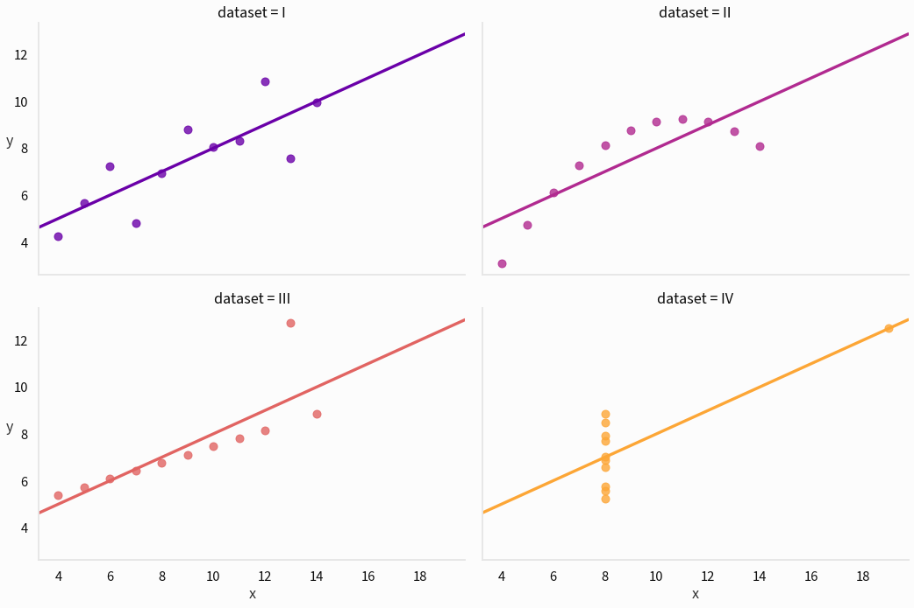

Effective Data Visualization, Part 1: What Is Effective Data Visualization?
This series is the textual version of a presentation I gave to a class on effective data visualization. I’m reproducing it here both to add some information that was cut from the presentation for time and to put it in a publicly available place.
Intro
What This Guide Is For
This series of posts is about how to make effective data visualization: exactly what I mean by that will become clear shortly. Much like one might critique writing in a creative writing class, I’ll focus on how to improve existing visualizations. This should hopefully also help the reader become a better consumer of data visualization they encounter in their daily lives.
Who This Guide Is For
This guide is for anyone! Unlike my other work on this blog, this guide expects no knowledge of coding or any platform for visualizations: learning such a tool is necessary to implement these ideas, but not necessary for this guide at all. My hope is that this is generally useful for people in business, data science, journalism, programming, and statistics: anyone who works with or cares about data.
Without further ado, let’s get started!
What is Effective Data Visualization?
What do I mean by effective data visualization? Here, an effective data visualization is one that effectively helps the viewer process information. I care here about dataviz as a tool that increases our brains’ ability to work with data.
This is contrasted with purely aesthetic concerns. Some visuals that don’t look spiffy are nonetheless useful tools, and some visuals that are aesthetically unappealing are useful processing aids.
Data can be deadly serious, and so data visualization can have tremendous importance.
The Challenger disaster in which Christa McAuliffe, the person in the photo above, died is a grim reminder of information’s power. The O-ring failure that led to the explosion was preventable and understood. Thus, some authors like Edward Tufte have analyzed this tragedy as a failure of data visualization as much as anything else: the visualizations used to communicate the dire need to reschedule the launch failed to convey this knowledge to the people who made that fateful decision. This is to say that effectively communicating and understanding data is worthy of serious study.
Why use data visualization at all? Why not use other tools, like spreadsheets or statistics?
Why is Effective Data Visualization?
There’s a persistent myth that graphs are inherently less meaningful or useful than raw statistics. Statistics are very important, and I would certainly not advocate for replacing the statistics underlying, say, clinical trials with a bunch of graphs.
The classic example of why we might use data visualization in addition to statistics comes to use from Frank Anscombe in the form of 4 different datasets like this one:
| x | y |
|---|---|
| 10.0 | 8.04 |
| 8.0 | 6.95 |
| 13.0 | 7.58 |
| 9.0 | 8.81 |
| 11.0 | 8.33 |
| 14.0 | 9.96 |
| 6.0 | 7.24 |
| 4.0 | 4.26 |
| 12.0 | 10.84 |
| 7.0 | 4.82 |
| 5.0 | 5.68 |
Imagine you’re trying to find out if y is related to x and figure out the nature of that relationship. It’s rather difficult to parse this information, especially given that this is just one-fourth of the total. Let’s try using some exploratory statistics to get a better sense of the data: the mean of each variable, the standard deviation of each variable, the regression line, the Pearson correlation, and the \(R^2\) value.
| \(\mu_x\) | \(\mu_y\) | \(\sigma_x\) | \(\sigma_y\) | \(r\) | Regression line | \(R^2\) | |
|---|---|---|---|---|---|---|---|
| Dataset | |||||||
| I | 9.0 | 7.501 | 3.317 | 2.032 | 0.816 | 0.500x + 3.000 | 0.667 |
| II | 9.0 | 7.501 | 3.317 | 2.032 | 0.816 | 0.500x + 3.000 | 0.666 |
| III | 9.0 | 7.500 | 3.317 | 2.030 | 0.816 | 0.500x + 3.000 | 0.666 |
| IV | 9.0 | 7.501 | 3.317 | 2.031 | 0.817 | 0.500x + 3.000 | 0.667 |
The standard statistics we might use when we don’t know what we’re looking for yet aren’t distinguishing these datasets at all. Let’s see what a plot looks like:

Sometimes a picture really is worth a thousand correlation values:
- The first dataset seems like a fairly standard linear correlation with some noise: linear regression seems like a good fit.
- The second dataset has a very regular relationship, but it’s not linear! Modeling this with a quadratic would work well.
- The third dataset has a very regular relationship with one crazy outlier.
- The fourth dataset is barely a dataset! Something has gone terribly wrong and a single influential outlier is preventing us from seeing that in statistics.
There is no tool that is more effective at quickly sussing out these patterns than a visualization like this one.
That’s all for today. Next time I’ll talk about visual complexity and visual overload, and I’ll do my part to combat some pernicious misconceptions about how sophisticated data visualization should be. See you then!
Comments
Comments powered by Disqus